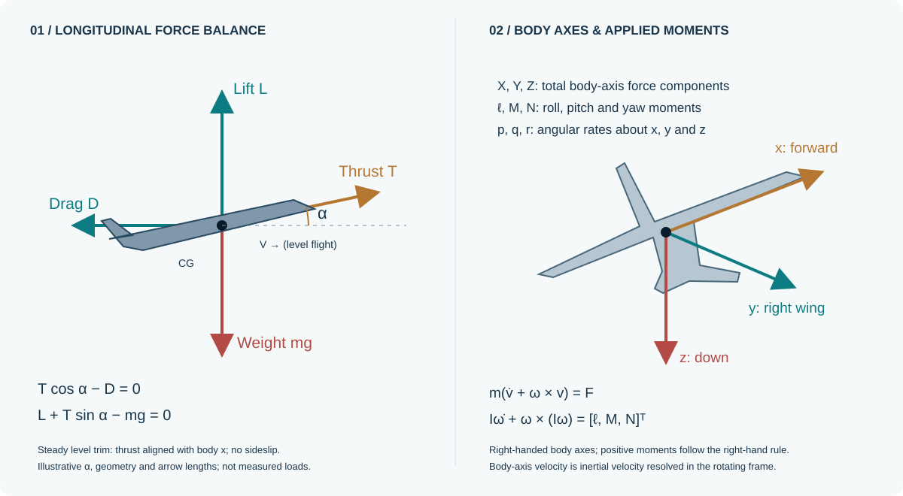

Wing geometry, mass properties, stability derivatives and control characteristics.
The engineering problem
A new airframe should not mean starting again.
Autonomous flight-control research needs a plant that responds to the aircraft being studied. Rebuilding that plant for every airframe makes comparisons harder and ties higher-level research to a single vehicle.
I separated aircraft data from the governing dynamics, developed a common nonlinear simulation architecture, and tested it across two general-aviation aircraft and a small UAV. The result is a reusable foundation for investigating flight control across different configurations.
01 / Parameterisation with purposeAircraft-specific data.
Aircraft-specific data.
A common dynamic backbone.
An Aircraft_ID selects geometry, mass, inertia, aerodynamic derivatives, control effectiveness and propulsion parameters. These inputs change the response while the underlying six-degree-of-freedom plant remains common.
Relative airflow, aerodynamic coefficients, propulsion, forces and moments.
Coupled translation and rotation, attitude kinematics and position.
Independent equilibrium solutions, open-loop propagation and modal comparisons.
Aircraft-state feedback connects the dynamic plant to the air-data and load calculations at each simulation step.
Built from scratch / What that means hereFrom equations on paper
From equations on paper
to a working nonlinear plant.
The contribution is the implementation and integration: a database-driven aerodynamic model, air-data calculations, forces and moments, propulsion, coupled rigid-body equations, attitude and position kinematics, plus a repeatable trim and validation workflow. Classical mechanics provides the governing physics; I built the reusable simulation around it.
Three coupled translational equations
u̇ = X/m + rv − qw
v̇ = Y/m + pw − ru
ẇ = Z/m + qu − pv
v̇ = Y/m + pw − ru
ẇ = Z/m + qu − pv
X, Y, Z include all external forces, including body-resolved weight. u, v, w are inertial velocity components in the rotating body frame; p, q, r are body angular rates.
Three coupled rotational equations
[ṗ, q̇, ṙ]ᵀ =
I⁻¹ (Mb − ω × Iω)
I⁻¹ (Mb − ω × Iω)
Using the full inertia tensor retains rotational coupling, including products of inertia where present in the selected dataset. Euler attitude and navigation-frame position are then propagated alongside these dynamic states.
02 / The physics inside the plantForces create motion.
Forces create motion.
Moments change orientation.
The model combines aerodynamic loads, propulsion and gravity with coupled rigid-body dynamics. Its six degrees of freedom describe translation along three axes and rotation about them.

Resolve the local flight condition
V = √(uᵣ² + vᵣ² + wᵣ²)
q̄ = ½ρV²
L = q̄SCL, D = q̄SCDuᵣ, vᵣ, wᵣ: air-relative body velocities · ρ: density · S: wing area
q̄ = ½ρV²
L = q̄SCL, D = q̄SCDuᵣ, vᵣ, wᵣ: air-relative body velocities · ρ: density · S: wing area
Angle of attack, sideslip, angular rates and control deflections determine the coefficients. Dynamic pressure and geometry convert those coefficients into physical forces and moments.
Keep the rotating frame coupled
m(v̇b + ω × vb) = Ftotal,bvb: body-axis velocity · ω = [p, q, r]ᵀ · total force includes gravity
The cross-product term accounts for the rotating body axes. Aerodynamic forces, thrust and the body-axis components of weight jointly determine translational acceleration.
Let inertia shape the response
Iω̇ + ω × (Iω) = MbI: inertia tensor · Mb: applied body-axis moments
Roll, pitch and yaw are coupled through the aircraft’s inertia. Changing mass properties and aerodynamic derivatives therefore produces a different dynamic response within the same equations.
Connect attitude to position
ṙn = Rb→n(φ, θ, ψ)vbRb→n: body-to-navigation rotation · φ, θ, ψ: Euler attitude angles
Attitude kinematics relate body rates to orientation. The rotation matrix then maps body velocity into navigation-axis position rates, closing the chain from loads to trajectory.
How the architecture accommodates higher-fidelity physics
The Cessna 182 investigation retained an optional higher-fidelity propulsion representation for throttle-sensitive work. For the PA-28, the pitching-moment formulation includes the angle-of-attack-rate derivative Cmα̇ where supported by the dataset. Both refinements add fidelity within the shared architecture.
The equations above summarise the governing mechanics; the implemented aerodynamic coefficients and subsystem fidelity depend on the selected aircraft dataset.
03 / Three distinct configurations
From general aviation to a 13.5 kg UAV.
The test set spans approximately 13.5–1201 kg, an 88.97:1 mass ratio. Each aircraft brings a different balance of geometry, inertia, aerodynamics and propulsion.
Establish the baseline
Initial nonlinear implementation, trim assessment and lateral-directional validation. Propulsion refinement addresses the precision needed for throttle equilibrium.
Test an independent dataset
A second general-aviation airframe tests repeatability, including short-period dynamics and a parameterised angle-of-attack-rate pitching-moment term.
Challenge the scale
A much lighter unmanned aircraft tests the shared architecture with substantially different mass and inertia, alongside nonlinear-to-linear modal comparisons.
04 / The decisive cross-aircraft test
Same solver. Different equilibria.
All three aircraft started from the same generic optimisation estimate: α = 3°, elevator = 0° and throttle = 0.4. Previously frozen trim solutions were withheld. Only the aircraft selection and reference operating condition changed.
3 aircraftOne nonlinear dynamic architecture
89:1Approximate tested mass range
120 sCommon open-loop trim verification
≈3.2 mmLargest reported final altitude drift in that test
| Aircraft | Speed / altitude | α | Elevator | Throttle |
|---|---|---|---|---|
| Cessna 182 | 67.09 m/s / 1524 m | −3.1900° | +0.9849° | 0.6210 |
| Piper PA-28 | 50.00 m/s / 1200 m | −0.2606° | +0.0805° | 0.4516 |
| Aerosonde | 35.00 m/s / 1000 m | +6.4893° | −2.0036° | 0.3103 |
The independently solved trim states remained close to equilibrium during propagation. Reported final altitude changes were approximately +3.2 mm, +1.1 mm and −0.15 mm respectively. These distinct trim solutions demonstrate that aircraft-specific parameters drive the shared plant’s behaviour.
Results apply to the selected model datasets and reference conditions. Throttle is normalised from 0 to 1; signed angles follow the model convention. The 120 s comparison is separate from the individual-aircraft 600 s equilibrium studies.
05 / Beyond holding a trim point
Does the aircraft respond correctly when disturbed?
Modal analysis checks the character of the dynamics: short-period pitching motion, coupled yaw–roll oscillation, rapid roll decay and slow spiral evolution. Published reference models and local linearisation provide the relevant comparison bases.
Aerosonde: nonlinear versus local linearisation
Maximum absolute discrepancy across the seven evaluated lateral modal quantities: 1.8233%, within the study’s 5% numerical comparison criterion.
Selected absolute differences from the reported comparison. Each bar uses the same 0–5% scale. These compare two representations of the selected model.
Preserving the physical character
The Aerosonde’s weakly unstable spiral mode appears in both the linear reference and the nonlinear response. The simulation reproduces the predicted instability rather than simply returning every disturbed state to equilibrium.
Independent PA-28 comparison
Against the published PA-28 reference, short-period natural frequency differs by 5.324%, Dutch-roll natural frequency by 2.042%, and Dutch-roll damping by 8.474%. The comparison distinguishes agreement in modal frequency from agreement in damping.
Local-linear consistency and published-model comparisons serve different validation purposes; neither is a flight-test measurement.
06 / What I bring as an aerospace engineerPhysics, software architecture
Physics, software architecture
and evidence in one workflow.
I built the parametric 6-DoF plant from scratch in MATLAB/Simulink and connected its implementation to a repeatable validation process, from governing equations through trim and dynamic-response assessment.
Translate mechanics into simulation
Implement coupled nonlinear aircraft motion, aerodynamic load calculations and kinematic transformations in MATLAB/Simulink.
Design for reuse
Separate configuration data from common equations, with optional aerodynamic and propulsion refinements where the investigation requires them.
Test what the model claims
Use independent trim initialisation, open-loop equilibrium checks and modal comparisons to assess parameterisation and dynamic behaviour.
07 / Where this leads
Explore SWARAJ flight-control research →A foundation for aircraft-adaptable autonomy.
The next step is to connect the reusable plant with behavioural supervisory flight control, then investigate how guidance and control strategies transfer between airframes. Broader operating-envelope checks and higher-fidelity datasets can extend the validation.
Discuss the engineering
Contact Ninad ↗Contact the author for further details.
For technical discussion, modelling methodology or collaboration enquiries, get in touch with Ninad Samrat Bhave.